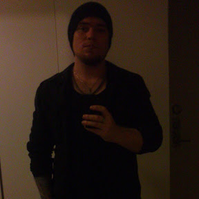

Olle Lindblad
Team Leader | Web Developer - Student
Summary
I am a hardworking dedicated individual with vocational experience in electrical & pneumatic troubleshooting and management administration.
Education
- Vocational education - Presterudsgymnasiet (2010-2011?)
- Team Leading education
Work Experience
- IMO AB - Oil pump manufacturing
Mars 2013 - February 2015
- Oil pump assembly
- Manometer assembly with pipe bending
- High pressure oil final test of the pumps
- Delaval International AB
Mars 2016 - Present
- VMS Packing - Final Assembly and quality check of VMS product
- Team Leader - VMS Production
- Team Leader - VMS Final Test
- Responsible for support, education and minor repairs for their AGV robot system and its digital system
Skills
- Electrical safety and troubleshooting
- Microsoft Office 365
- Management
- Teams & sharepoint
Certifications
- BRAVO! - Certificate of appreciation for serving as a role model at Delaval (2024)
- BRAVISSIMO! - Certificate of special recognition for going beyond the call of duty at Delaval (2024)
Hobbies
- Reading
- Educational content
- Playing guitar
Contact
'